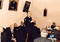

17 и 18 декабря 2002 г. состоялся визит официальной делегации Европейского общества по клинической микробиологии и инфекционным болезням (ESCMID) в Москву. Визит был организован по совместной инициативе ESCMID и Межрегиональной ассоциации по клинической микробиологии и антимикробной химиотерапии (МАКМАХ).
17 и 18 декабря 2002 г. состоялся визит официальной делегации Европейского общества по клинической микробиологии и инфекционным болезням (ESCMID) в Москву. Визит был организован по совместной инициативе ESCMID и Межрегиональной ассоциации по клинической микробиологии и антимикробной химиотерапии (МАКМАХ). В составе делегации прибыли: президент ESCMID Р. Финч, генеральный секретарь Р. Норрби, президент ESCMID с 2003 г. М. Струленс, член Исполкома ESCMID Д. Корналиа. и исполнительный директор П. Шох
17 декабря в гостинице «Золотое кольцо» состоялся круглый стол, посвященный вопросам развития сотрудничества ESCMID и российскими учеными и врачами. Наряду с ведущими российскими специалистами по инфекционной патологии в круглом столе приняли участие представители ведущих фармкомпаний и производителей диагностических материалов, поддержавшие визит делегации (Bristol-Myers Squibb, Pfizer, KRKA, Lek, bioMerieux, Astra Zeneca, «Аболмед»). Всего с российской стороны в работе круглого стола приняли участие 45 человек.
Члены Исполкома ESCMID представили основные цели и направления деятельности общества и предложили возможности участия России в международных проектах. С российской стороны предложения по сотрудничеству были представлены президентом МАКМАХ Л.С. Страчунским, членом правления Всероссийского научного общества эпидемиологов, микробиологов и паразитологов В.В. Зверевым, членом правления Альянса клинических химиотерапевтов и микробиологов С.В. Сидоренко и вице-президентом Всероссийского общества по хирургической инфекции Н.А. Ефименко. В дискуссии приняли участие вице-президент МАКМАХ А.А. Фирсов, член правления МАКМАХ В.А. Руднов и член исполкома Межрегиональной ассоциации специалистов по хирургическим инфекциям Б.Р. Гельфанд.
В тот же день состоялась встреча в Российской академии медицинских наук (РАМН). Перед встречей с делегацией прошла беседа с Президентом РАМН, академиком В.И. Покровским, во время которой члены делегации были ознакомлены с основными направлениями деятельности и структурой РАМН. Во время встречи, в которой приняли участие 12 директоров ведущих НИИ системы РАМН, академики и члены-корреспонденты РАМН, обсуждались вопросы интеграции российских научно-исследовательских учреждений в международные программы с участием ESCMID. В обсуждении приняли участие А.Л. Гинцбург, Ю.В. Лобзин, А.М. Егоров и Ю.В. Дудник.
По итогам визита достигнуто соглашение о подписании меморандума о долгосрочном сотрудничестве между РАМН и ESCMID.
Во второй день визита делегация ESCMID приняли участие во встрече в Минздраве РФ. С российской стороны присутствовали Начальник Управления научно-исследовательских медицинских учреждений С.Б. Ткаченко, Руководитель Департамента образовательных медицинских учреждений и кадровой политики Н.Н. Володин, зам. начальника Департамента государственного санитарно-эпидемиологического надзора М.П. Шевырева, главный инфекционист Минздрава РФ В.В. Малеев, зам. директора по науке ЦНИИ эпидемиологии Н.А. Семина, директор Научно-методического центра Минздрава РФ по мониторингу антибиотикорезистентности Л.С. Страчунский.
Обсуждались проблемы гармонизации программ последипломного образования по клинической микробиологии, сотрудничество ESCMID с научно-исследовательскими учреждениями Минздрава РФ, обмен специалистами.
Все встречи прошли в дружественной и конструктивной обстановке. От имени членов делегации президент ESCMID Р. Финч выразил искреннюю признательность Минздраву РФ, РАМН и МАКМАХ за хорошую организацию визита.
Фотографии
(выберите нужную картинку для просмотра увеличенного изображения):
 | Президиум круглого стола
Н.А. Ефименко, Л.С. Страчунский, Р. Финч, В.В. Зверев, С.В. Сидоренко |
 | Участники круглого стола |
 | Официальная делегация ESCMID на встрече с Президентом РАМН Академиком В.И. Покровским
Ю.В. Лобзин, Дж. Корналиа, Р. Финч, В.И. Покровский, Р. Норрби, М. Струленс, Л.С. Страчунский, П. Шох, Н.П. Бочков, Р.С. Козлов |
|  | Выступление Ю.В. Лобзина на встрече в РАМН |
 | Официальная делегация ESCMID на Красной площади
П. Шох, М. Струленс, Р.С. Козлов, Р. Норрби, Л.С. Страчунский, Р. Финч, А.В. Беденков, Д.В. Галкин |